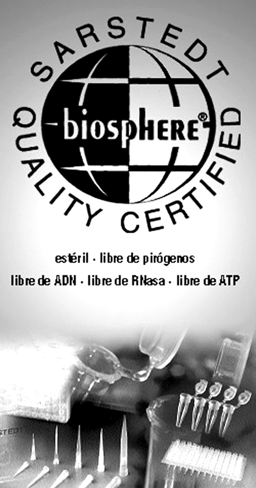
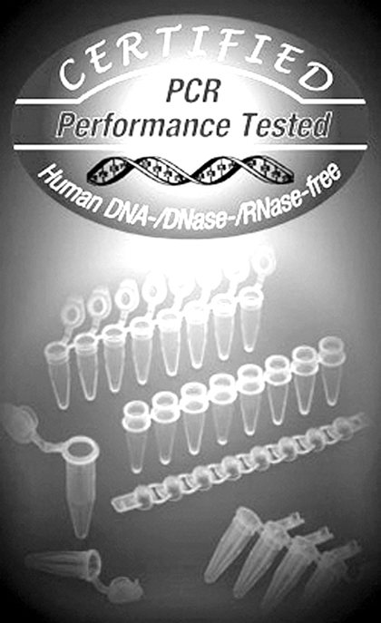

Sarstedt biología molecular productos de cultivo celular y PCR
DESCRIPCIÓN:
El estándar de calidad Biosphere®.
Productos de laboratorio para las más altas exigencias.
Sólo los productos que cumplen con las condiciones de pureza en el proceso de producción, bajo control permanentemente, reciben el sello de calidad Biosphere®.
El objetivo es no sólo satisfacer las mayores exigencias de la investigación médica, la tecnología del medio ambiente y las industrias farmacológica y alimentaria, sino también los requisitos de la biología celular.

CARACTERÍSTICAS:
Los productos Biosphere® proveen al usuario artículos de un solo uso, como puntas de pipeta con y sin filtro, microtubos Multiply®-PCR de paredes finas y microtubos SARSTEDT, se garantizan estériles y libres de pirógenos, DNA, RNasa y ATP.
Los productos están empaquetados en embalajes pequeños a fin de evitar que los microtubos de reacción Biosphere® permanezcan largos periodos en bolsas abiertas y por tanto haya riesgo de contaminación.
Sin inhibidores de PCR
Con el fin de no interferir en los métodos de PCR establecidos en muchos laboratorios clínicos y de investigación, los artículos del laboratorio Biosphere® no contienen inhibidores de PCR.
Por este motivo, SARSTEDT sólo utiliza material específicamente seleccionado y probado para los productos de laboratorio de PCR.
Grado de calidad “PCR Performance Tested”
PCR y otros métodos de biología molecular se han ganado el acceso a los laboratorios en todo el mundo.
SARSTEDT ha refinado al máximo los requerimientos para los productos PCR no estériles. Personal calificado, condiciones de habitación limpia “clean room” con procesos de producción automatizados permiten una fabricación libre de contaminación.
Cada lote de producción está sujeto al método PCR de alta sensibilidad para garantizar el cumplimiento de los criterios individuales de calidad.
Consecuentemente, el distintivo de calidad “PCR Performance Tested” para un lote de producción significa una aprobación satisfactoria de los tests PCR.
Gracias a este estándar de calidad, los clientes pueden usar los desechables SARSTEDT en contacto directo con reactivos y material de muestra para PCR en su trabajo experimental.

Los productos con el distintivo “PCR Performance Tested” cumplen los siguientes requerimientos:
• Libre de DNasa/RNasa.
• Libre de DNA humano.
• Libre de inhibidor PCR.
DATOS COMPLEMENTARIOS: Para mayor información comunicarse a:
SARSTEDT MÉXICO S. DE R.L. DE C.V.
Teléfono: (55) 8501-1577
Fax: 8501-1578
e-mail: info.mx@sarstedt.com
y en nuestra página www.sarstedt.com